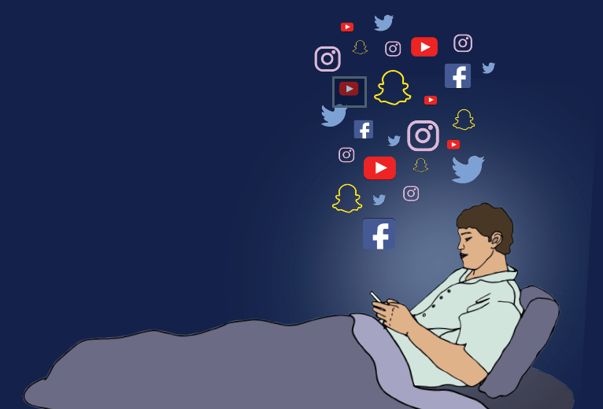

"Put your phone down."
It's something that we loathe to hear from our parents, or any adult in general. But it seems as if these days it is needed to be said more than ever. With the way kids, teenagers, and adults alike now center themselves around the online circle, it is clear that social media use can slowly turn problematic.
According to Healthline, there is still no official diagnosis of "social media addiction". But like other types of behavioral addictions, this specific type focuses on the excessive use of social media apps (such as Facebook, Twitter, Tiktok) that can be detrimental to one's physical and mental wellbeing.
What causes this addiction?
Behavioral addictions have much the same effect on the brain as drugs and alcohol, and the same is no different for social media. For those who engage with social media apps on a regular basis, the process of scrolling and intaking images, posting and receiving positive affirmation from others, and other stimuli create the chemical dopamine in the brain, which creates feelings of pleasure and reward and causing the formation of “addiction pathways” in the brain that makes it hard to resist urges or stop the behavior.
Also, social media giants pour billions of dollars into advertising and hire engineers that are paid to make content more addictive. These sites also track your activity, customizing your feed to show you posts you are most likely to look at, watch, or comment on. This all makes social media more addictive in nature and makes it harder for the average person to disconnect.
What is the effect of this addiction?
Though social media addiction is not as grave or as addicting as opposed to other behavioral addictions, almost every person uses social media regularly. In an article entitled “Social Media use and depression in adolescents: a scoping review” (Vidal, Lhaksampa, Miller, Platt, et al., 2020), findings from recent studies that links excessive social media in an addictive manner similar to that of impulse control disorders, causes distress and/or functional impairment and was associated with emotional maladjustment (Critselis et al., 2014), internalizing and externalizing symptoms (Tsitsika, Tzavela, et al., 2014), and depressive mood (Van Rooij, Ferguson, Van de Mheen, & Schoenmakers, 2017).
COPYRIGHT Google - RAGAY & OLIVA - 9-XAVIER - OCTOBER 6, 2022